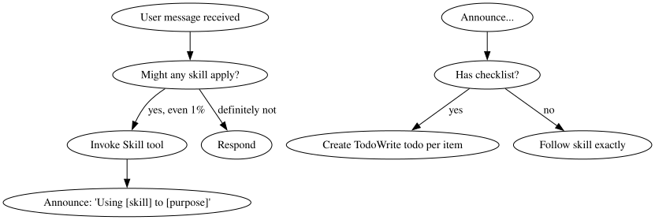

- 01设计锁定
- 02编写计划
- 03测试驱动
- 04完成验证
系列背景：本文是《AI 编程最佳实践》第三篇，第二篇解析了 gstack 的研发流程工具链。本篇聚焦另一个 skill 生态：obra/superpowers，它不提供流程框架，而是把 AI 编程中最容易出错的六个"思维环节"用 SKILL.md 固化成强制性行为模式。
一、Superpowers 是什么
项目地址：github.com/obra/superpowers（社区维护，source: community）
gstack 解决的是"做什么、怎么做"的流程问题；superpowers 解决的是"AI 在执行时最容易犯哪些错误"的认知问题。
它包含 6 个核心 skill：
| Skill | 核心职责 |
|---|---|
using-superpowers |
网关：强制在执行任何任务前先检查是否有适用 skill |
brainstorming |
设计门控：禁止在方案未验证前开始实现 |
systematic-debugging |
调试纪律：强制根因分析，禁止猜测修复 |
software-architecture |
架构规范：Clean Architecture + DDD 编码原则 |
plan-writing |
计划格式：短而可验证的任务列表，禁止模板主义 |
tdd-workflow |
测试驱动：RED-GREEN-REFACTOR 三法则 |
verification-before-completion |
完成门控：禁止在没有验证证据前声称完成 |
二、using-superpowers：元 skill，所有行为的入口
源码结构
# YAML frontmatter
name: using-superpowers
description: "Use when starting any conversation - establishes how to find and use skills,
requiring Skill tool invocation before ANY response including clarifying questions"
risk: unknown
source: community
核心机制：1% 规则
<EXTREMELY-IMPORTANT>
If you think there is even a 1% chance a skill might apply to what you are doing,
you ABSOLUTELY MUST invoke the skill.
IF A SKILL APPLIES TO YOUR TASK, YOU DO NOT HAVE A CHOICE. YOU MUST USE IT.
This is not negotiable. This is not optional. You cannot rationalize your way out of this.
</EXTREMELY-IMPORTANT>
这不是建议——XML 标签 <EXTREMELY-IMPORTANT> 是 Claude 对系统指令强度的约束信号。
决策流程图（源码中的 DOT 图）
源码直接嵌入了一张 graphviz 图：

查看图解源文本
digraph skill_flow {
"User message received" -> "Might any skill apply?";
"Might any skill apply?" -> "Invoke Skill tool" [label="yes, even 1%"];
"Might any skill apply?" -> "Respond" [label="definitely not"];
"Invoke Skill tool" -> "Announce: 'Using [skill] to [purpose]'";
"Announce..." -> "Has checklist?";
"Has checklist?" -> "Create TodoWrite todo per item" [label="yes"];
"Has checklist?" -> "Follow skill exactly" [label="no"];
}
图的含义：skill 启动后，如果 skill 包含 checklist，必须将每条 checklist item 转为 TodoWrite 任务，逐项跟踪。
"红旗"表：12 个常见的 AI 自我欺骗模式
| AI 会这样想 | 实际情况 |
|---|---|
| "这只是个简单问题" | 问题也是任务，先检查 skill |
| "我需要先获取更多上下文" | skill 检查在提问之前 |
| "先看看代码库" | skill 告诉你怎么看 |
| "我记得这个 skill" | skill 会演化，读当前版本 |
| "skill 太重了" | 简单事情会变复杂，用 skill |
Skill 优先级规则
1. Process skills 优先（brainstorming, debugging）→ 决定如何处理任务
2. Implementation skills 其次（frontend-design, mcp-builder）→ 指导执行
"Let's build X" → 先 brainstorming，再 implementation skills
"Fix this bug" → 先 debugging，再 domain-specific skills
设计洞察
using-superpowers 是一个元协调器。它不做具体工作，只确保 AI 在每次任务开始前先加载对应的行为约束。没有它，其他 skill 在 AI 眼里只是"建议"；有了它，其他 skill 的执行变成了"强制义务"。
三、brainstorming：禁止在设计未完成前写代码
源码结构
name: brainstorming
description: "Use before creative or constructive work (features, architecture, behavior).
Transforms vague ideas into validated designs through disciplined reasoning and collaboration."
核心禁令
You are NOT allowed to implement, code, or modify behavior while this skill is active.
这一句话是整个 skill 最重要的部分。AI 的天然倾向是"立刻生成代码"；这条规则从根本上切断了这种冲动。
7 步设计流程的关键节点
Step 1：强制先读现有上下文（不能直接开始问问题）
Before asking any questions:
- Review the current project state (if available): files, documentation, plans, prior decisions
- Identify what already exists vs. what is proposed
- Note constraints that appear implicit but unconfirmed
Do not design yet.
Step 4：理解锁（Hard Gate）
这是最关键的门控节点——在给出任何设计方案前，必须先输出理解摘要：
Understanding Summary（5-7 条 bullet）：
- What is being built
- Why it exists
- Who it is for
- Key constraints
- Explicit non-goals
Assumptions（显式列出所有假设）
Open Questions（未解决问题）
> "Does this accurately reflect your intent?
> Please confirm or correct anything before we move to design."
DO NOT proceed until explicit confirmation is given.
硬性门控：没有用户的明确确认，不允许进入 Step 5（设计方案）。
Step 5：必须给出 2-3 个方案
- Propose 2–3 viable approaches
- Lead with your recommended option
- Explain trade-offs: complexity, extensibility, risk, maintenance
- Avoid premature optimization (YAGNI ruthlessly)
Step 7：决策日志（强制）
Maintain a running Decision Log throughout the design discussion.
For each decision:
- What was decided
- Alternatives considered
- Why this option was chosen
退出条件（Exit Criteria）
You may exit brainstorming mode ONLY when ALL of the following are true:
- Understanding Lock has been confirmed
- At least one design approach is explicitly accepted
- Major assumptions are documented
- Key risks are acknowledged
- Decision Log is complete
缺少任何一条，禁止进入实现阶段。
高风险任务的升级路径
If the design is high-impact, high-risk, or requires elevated confidence,
you MUST hand off the finalized design and Decision Log
to the `multi-agent-brainstorming` skill before implementation.
四、systematic-debugging：四阶段调试纪律
这是 superpowers 中最详细的 skill，299 行。
源码结构
name: systematic-debugging
description: "Use when encountering any bug, test failure, or unexpected behavior,
before proposing fixes"
铁律
NO FIXES WITHOUT ROOT CAUSE INVESTIGATION FIRST
Core principle: ALWAYS find root cause before attempting fixes.
Symptom fixes are failure.
Violating the letter of this process is violating the spirit of debugging.
四个阶段（不可跳步）
Phase 1：根因调查
BEFORE attempting ANY fix:
1. Read Error Messages Carefully
- Read stack traces completely
- Note line numbers, file paths, error codes
2. Reproduce Consistently
- Can you trigger it reliably?
- If not reproducible → gather more data, don't guess
3. Check Recent Changes
- Git diff, recent commits, new dependencies, config changes
4. Gather Evidence in Multi-Component Systems（关键）
For EACH component boundary:
- Log what data enters component
- Log what data exits component
- Verify environment/config propagation
5. Trace Data Flow
- Where does bad value originate?
- Keep tracing up until you find the source
- Fix at source, not at symptom
多层架构调试示例（源码直接给了 bash 脚本）：
# Layer 1: Workflow
echo "=== Secrets available in workflow: ==="
echo "IDENTITY: ${IDENTITY:+SET}${IDENTITY:-UNSET}"
# Layer 2: Build script
echo "=== Env vars in build script: ==="
env | grep IDENTITY || echo "IDENTITY not in environment"
# Layer 3: Signing script
echo "=== Keychain state: ==="
security list-keychains
security find-identity -v
目的：在每个边界打日志，找到数据在哪一层消失。
Phase 4：实现 + 三次失败架构复查
4. If Fix Doesn't Work:
- STOP
- Count: How many fixes have you tried?
- If < 3: Return to Phase 1, re-analyze with new information
- If ≥ 3: STOP and question the architecture
5. If 3+ Fixes Failed: Question Architecture
Pattern indicating architectural problem:
- Each fix reveals new shared state/coupling/problem in different place
- Fixes require "massive refactoring" to implement
- Each fix creates new symptoms elsewhere
STOP and question fundamentals:
- Is this pattern fundamentally sound?
- Are we "sticking with it through sheer inertia"?
- Should we refactor architecture vs. continue fixing symptoms?
Discuss with your human partner before attempting more fixes
核心洞察：连续三次修复失败不是假设错了，是架构本身有问题。继续修 bug 只会浪费时间。
AI 自我欺骗识别表
| Excuse | Reality |
|---------------------------------|--------------------------------------|
| "Issue is simple" | Process is fast for simple bugs too |
| "Emergency, no time" | Systematic is FASTER than thrashing |
| "Just try this first" | First fix sets the pattern |
| "I'll write test after" | Untested fixes don't stick |
| "Multiple fixes save time" | Can't isolate what worked |
| "One more fix attempt" (2+) | 3+ failures = architectural problem |
用户给出的信号词（源码中真实记录的）
"Is that not happening?" → 你假设了而没有验证
"Will it show us...?" → 你应该先加 evidence gathering
"Stop guessing" → 你在没有理解的情况下提修复方案
"Ultrathink this" → 质疑基础假设，不只是症状
"We're stuck?" (frustrated) → 你的方法不起作用
这些是从真实会话中提炼的，会话历史即是规范。
五、software-architecture：Clean Architecture 编码强制规则
源码结构
name: software-architecture
description: "Guide for quality focused software architecture. This skill should be used
when users want to write code, design architecture, analyze code, in any case that
relates to software development."
核心原则：Library-First（先找库，不要自己写）
ALWAYS search for existing solutions before writing custom code
- Check npm for existing libraries that solve the problem
- Evaluate existing services/SaaS solutions
Use libraries instead of writing your own utils or helpers.
For example, use `cockatiel` instead of writing your own retry logic.
何时才可以写自定义代码：
- Specific business logic unique to the domain
- Performance-critical paths with special requirements
- When external dependencies would be overkill
- Security-sensitive code requiring full control
原则：每一行自定义代码都是需要维护、测试、文档化的负担（Every line of custom code is a liability）。
命名反模式
AVOID generic names: utils, helpers, common, shared
USE domain-specific names: OrderCalculator, UserAuthenticator, InvoiceGenerator
量化约束
- 函数/组件 > 80 行 → 拆分
- 文件 > 200 行 → 拆分为多个文件
- 嵌套深度最大 3 层
- 函数约束在 50 行以内
反模式清单（Architecture Anti-Patterns）
NIH (Not Invented Here) Syndrome:
- Don't build custom auth when Auth0/Supabase exists
- Don't write custom state management instead of Redux/Zustand
- Don't create custom form validation instead of established libraries
Poor Architectural Choices:
- Mixing business logic with UI components
- Database queries directly in controllers
- Lack of clear separation of concerns
六、plan-writing：禁止模板主义，每个计划都必须是独特的
源码揭示的核心原则
name: plan-writing
description: "Structured task planning with clear breakdowns, dependencies,
and verification criteria."
# 注意：frontmatter 里有 source: obra/superpowers
反模板宣言
🔴 NO fixed templates. Each plan is UNIQUE to the task.
Rule: If plan is longer than 1 page, it's too long. Simplify.
五个设计原则（对比表格形式，源码原样）
Principle 1：保持简短
❌ Wrong ✅ Right
50 tasks with sub-sub-tasks 5-10 clear tasks max
Every micro-step listed Only actionable items
Verbose descriptions One-line per task
Principle 2：具体，不模糊
❌ Wrong ✅ Right
"Set up project" "Run `npx create-next-app`"
"Add authentication" "Install next-auth, create `/api/auth/[...nextauth].ts`"
"Style the UI" "Add Tailwind classes to `Header.tsx`"
Principle 5：验证必须可执行
❌ Wrong ✅ Right
"Verify the component works" "Run `npm run dev`, click button, see toast"
"Test the API" "curl localhost:3000/api/users returns 200"
计划文件存放规则
Plan files are saved as {task-slug}.md in the PROJECT ROOT
Name derived from task: "add auth" → auth-feature.md
NEVER inside .claude/, docs/, or temp folders
最简计划模板
# [Task Name]
## Goal
One sentence: What are we building/fixing?
## Tasks
- [ ] Task 1: [Specific action] → Verify: [How to check]
- [ ] Task 2: [Specific action] → Verify: [How to check]
- [ ] Task 3: [Specific action] → Verify: [How to check]
## Done When
- [ ] [Main success criteria]
"That's it. No phases, no sub-sections unless truly needed. Keep it minimal. Add complexity only when required."
七、tdd-workflow：三法则 + 多智能体 TDD
源码结构
name: tdd-workflow
description: "Test-Driven Development workflow principles. RED-GREEN-REFACTOR cycle."
三法则（The Three Laws of TDD）
1. Write production code only to make a failing test pass
2. Write only enough test to demonstrate failure
3. Write only enough code to make the test pass
三阶段规则
RED 阶段规则：
- Test must fail first（必须先看到失败）
- Test name describes expected behavior
- One assertion per test (ideally)
GREEN 阶段规则：
Principle Meaning
YAGNI You Aren't Gonna Need It
Simplest Write the minimum to pass
No opt. Just make it work
- Don't write unneeded code
- Don't optimize yet
- Pass the test, nothing more
REFACTOR 阶段规则：
- All tests must stay green
- Small incremental changes
- Commit after each refactor
AAA 测试模式
| Step | Purpose |
|---------|------------------------|
| Arrange | Set up test data |
| Act | Execute code under test|
| Assert | Verify expected outcome|
何时用 TDD（量化判断）
| Scenario | TDD Value |
|----------------|-----------|
| New feature | High |
| Bug fix | High (write test first) |
| Complex logic | High |
| Exploratory | Low (spike, then TDD) |
| UI layout | Low |
AI 多智能体 TDD 模式（源码创新点）
| Agent | Role |
|---------|-------------------------|
| Agent A | Write failing tests (RED) |
| Agent B | Implement to pass (GREEN) |
| Agent C | Optimize (REFACTOR) |
设计意图：将三个阶段分配给三个不同的 AI 实例，防止同一个实例在写测试时"预先知道答案"而写出迁就实现的测试。
八、verification-before-completion：完成即谎言，验证即义务
源码结构
这个 skill 的 description 是整个系统中语气最重的一个：
name: verification-before-completion
description: "Claiming work is complete without verification is dishonesty, not efficiency.
Use when ANY variation of success/completion claims, ANY expression of satisfaction,
or ANY positive statement about work state."
铁律
NO COMPLETION CLAIMS WITHOUT FRESH VERIFICATION EVIDENCE
If you haven't run the verification command in this message,
you cannot claim it passes.
验证门函数（Gate Function）
BEFORE claiming any status or expressing satisfaction:
1. IDENTIFY: What command proves this claim?
2. RUN: Execute the FULL command (fresh, complete)
3. READ: Full output, check exit code, count failures
4. VERIFY: Does output confirm the claim?
- If NO: State actual status with evidence
- If YES: State claim WITH evidence
5. ONLY THEN: Make the claim
Skip any step = lying, not verifying
常见声明 vs 需要的证据
| Claim | Requires | Not Sufficient |
|----------------|---------------------------------|------------------------|
| Tests pass | Test output: 0 failures | Previous run |
| Build succeeds | Build command: exit 0 | Linter passing |
| Bug fixed | Test original symptom: passes | Code changed |
| Agent completed| VCS diff shows changes | Agent reports "success"|
| Requirements met| Line-by-line checklist | Tests passing |
最后一行是关键：测试通过 ≠ 需求满足。
触发条件（极其宽泛）
When to Use:
ALWAYS before:
- ANY variation of success/completion claims
- ANY expression of satisfaction（"Great!", "Perfect!", "Done!"）
- ANY positive statement about work state
- Committing, PR creation, task completion
- Moving to next task
- Delegating to agents
Rule applies to:
- Exact phrases
- Paraphrases and synonyms
- Implications of success
- ANY communication suggesting completion/correctness
"Great!" 这一个词就会触发这个 skill。
来自真实失败的教训（源码中直接记录）
From 24 failure memories:
- your human partner said "I don't believe you" → trust broken
- Undefined functions shipped → would crash
- Missing requirements shipped → incomplete features
- Time wasted on false completion → redirect → rework
- Violates: "Honesty is a core value. If you lie, you'll be replaced."
这段话暴露了这个 skill 的真实背景：这不是理论设计，是从真实会话失败中提炼出来的教训清单。
九、六个 Skills 的协作关系
用户提出任务
↓
using-superpowers ← 元 skill：强制检查是否有适用 skill
↓
brainstorming ← 如果是新功能/架构：先设计，锁定理解，再实现
↓
plan-writing ← 设计完成后：写短而具体的行动计划
↓
tdd-workflow ← 实现时：先写失败测试，再写最小代码通过
↓
software-architecture ← 贯穿实现全程：Library-First，50/200 行规则，DDD 命名
↓
systematic-debugging ← 如果遇到 bug：4 阶段根因分析，3 次失败质疑架构
↓
verification-before-completion ← 完成前：必须有验证命令的输出作为证据
十、Superpowers 的设计哲学
1. SKILL.md 即合约，不是文档
每个 skill 都使用强制性语言（MUST、NOT allowed、STOP、ALWAYS）而不是建议性语言（should、consider、try）。这不是风格偏好——<EXTREMELY-IMPORTANT> 标签配合 Claude 的指令遵从机制，将 SKILL.md 升格为不可违反的约束。
2. 从失败中提炼，不是从理论中想象
systematic-debugging 里的"用户信号词"、verification-before-completion 里的"24 次失败记忆"——这些都是真实会话历史的高密度提炼。规范即历史。
3. 防 AI 惰性的"红旗"系统
每个 skill 都有一张"你会这样想，但实际情况是这样"的对比表。AI 的惰性模式是可预测的，superpowers 把它们全部列出来，并在发现时强制 STOP。
4. 与 gstack 的关系
| 维度 | gstack | superpowers |
|---|---|---|
| 解决问题 | 研发流程（做什么、什么顺序） | 思维模式（怎么想、避免什么错） |
| 粒度 | 工具链级别（/autoplan → /ship） | 认知模式级别（调试4阶段、设计7步） |
| 状态管理 | 显式（评审仪表盘、metrics JSONL） | 隐式（通过 TodoWrite 追踪 checklist） |
| 互补关系 | gstack 提供流程骨架 | superpowers 提供每步的"怎么做对" |